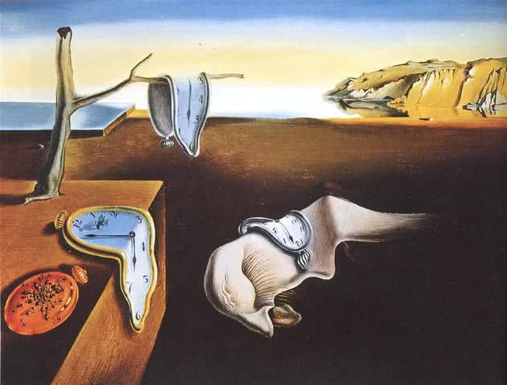

O Tempo ( Poema de Mario Quintana)
A vida é o dever que nós trouxemos para fazer em casa.
Quando se vê, já são seis horas!
Quando de vê, já é sexta-feira!
Quando se vê, já é natal…
Quando se vê, já terminou o ano…
Quando se vê perdemos o amor da nossa vida.
Quando se vê passaram 50 anos!
Agora é tarde demais para ser reprovado…
Se me fosse dado um dia, outra oportunidade, eu nem olhava o relógio.
Seguiria sempre em frente e iria jogando pelo caminho a casca dourada e inútil das horas…
Seguraria o amor que está a minha frente e diria que eu o amo…
E tem mais: não deixe de fazer algo de que gosta devido à falta de tempo.
Não deixe de ter pessoas ao seu lado por puro medo de ser feliz.
A única falta que terá será a desse tempo que, infelizmente, nunca mais voltará